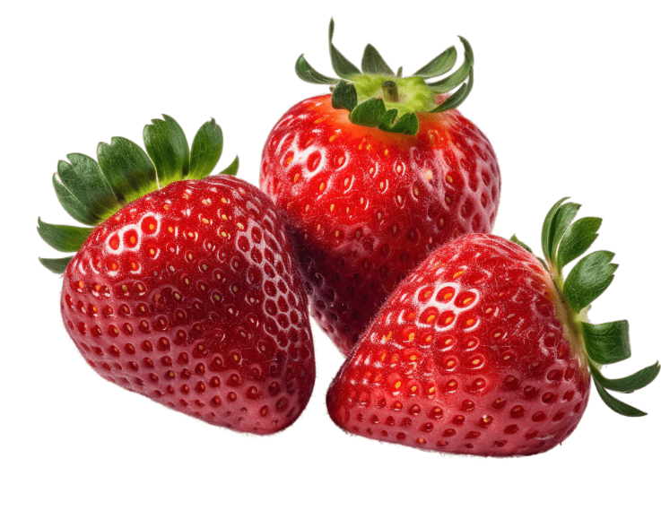
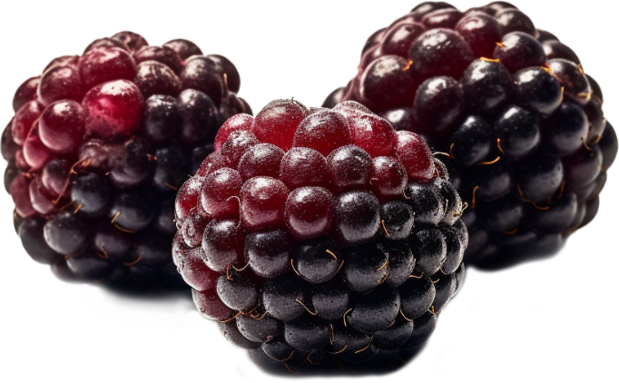
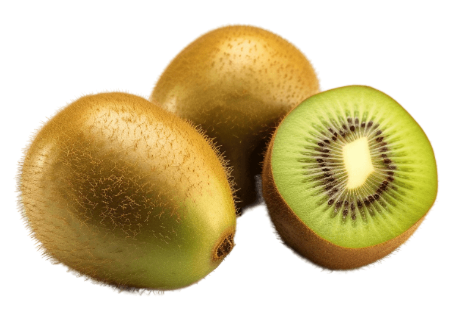

Taste Drive
Banana
Bananas are a popular tropical fruit known for their distinctive yellow color and sweet taste. They are botanically classified as berries and grow in clusters on large herbaceous plants. Bananas are rich in essential nutrients such as potassium, vitamin C, and dietary fiber, making them a convenient and healthy snack option for athletes and individuals of all ages.
Coconut
Coconuts are tropical fruits with a hard outer husk, a tough shell, and a deliciously sweet, creamy flesh inside. They are widely known for their versatility, providing coconut water, milk, oil, and grated coconut for culinary use. Coconuts are a rich source of healthy fats, fiber, and essential minerals, making them a nutritious addition to various dishes and beverages.
Strawberry
Strawberries are vibrant red fruits with a sweet and slightly tart flavor. They are a member of the rose family and are known for their juicy texture and small seeds that cover their surface. Packed with antioxidants, vitamins, and dietary fiber, strawberries are not only delicious but also offer numerous health benefits, including promoting heart health and boosting the immune system.

Blackberry
Strawberries are vibrant red fruits with a sweet and slightly tart flavor. They are a member of the rose family and are known for their juicy texture and small seeds that cover their surface. Packed with antioxidants, vitamins, and dietary fiber, strawberries are not only delicious but also offer numerous health benefits, including promoting heart health and boosting the immune system.

Kiwi
Strawberries are vibrant red fruits with a sweet and slightly tart flavor. They are a member of the rose family and are known for their juicy texture and small seeds that cover their surface. Packed with antioxidants, vitamins, and dietary fiber, strawberries are not only delicious but also offer numerous health benefits, including promoting heart health and boosting the immune system.
